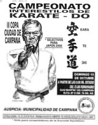
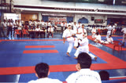
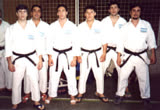
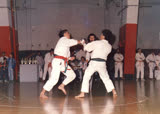
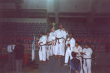
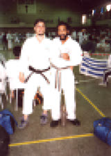
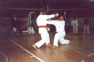
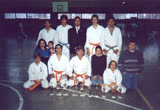

Fotos de Torneos

Falta en el archivoEsta fotografía no está en la copia local del sitio 2001; es recuperable del servidor original.
a_japan_world_cup_pretournament_ar_1998.jpg

Falta en el archivoEsta fotografía no está en la copia local del sitio 2001; es recuperable del servidor original.
a_oki_kar_and_kob_world_tourn_1997_del_ar_uy_it.jpg
Falta en el archivoEsta fotografía no está en la copia local del sitio 2001; es recuperable del servidor original.
a_metropolitano_river_bs.as_2000.jpgFalta en el archivoEsta fotografía no está en la copia local del sitio 2001; es recuperable del servidor original.
a_oki_karate_and_kobudo_world_tournament.jpg
Falta en el archivoEsta fotografía no está en la copia local del sitio 2001; es recuperable del servidor original.
a_metropolitano_en_river_bs.as._2000.jpg


Falta en el archivoEsta fotografía no está en la copia local del sitio 2001; es recuperable del servidor original.
a_iii_copa_campana_bs.as_ar_1995.jpg